Feesten
Een feest, bruiloft, koffietafel of andere gelegenheid met veel gasten? Daar is het Oude Parochiehuis erg geschikt voor. Welke dranken schenken we, en welke hapjes mogen we voorschotelen? Dat bespreken we samen.
Eetcafé in Esbeek, zeven dagen per week open
Het dorpscafé van Esbeek, sinds 1909.
Kom binnen voor een lunch, diner of borrel. Of gewoon voor een lekker kopje koffie bij de open haard na een wandeling in de natuurrijke omgeving van Esbeek.
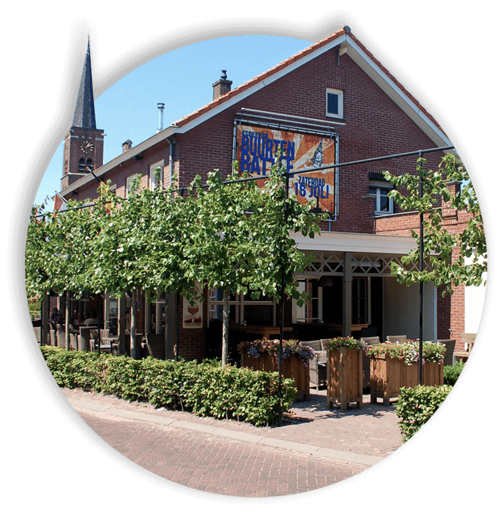
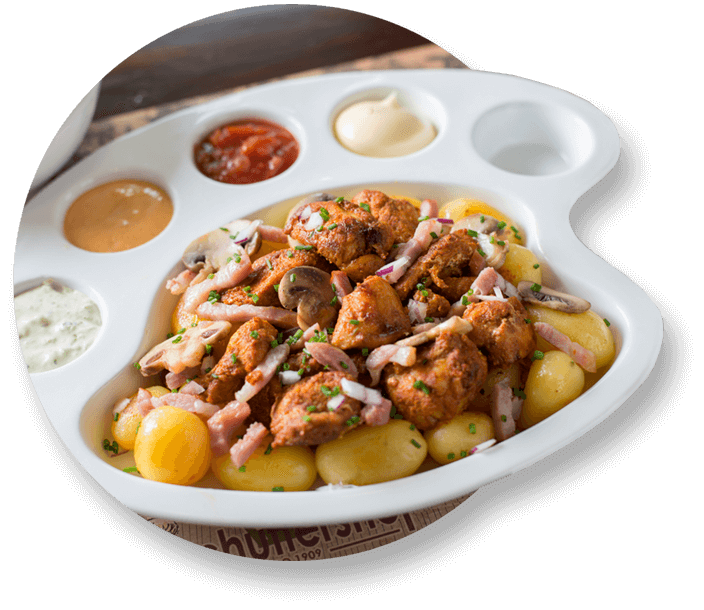
In ons gezellige eetcafé kun je zeven dagen per week terecht voor een lunch, diner of borrel. Van een broodje gehaktbal uit eigen keuken tot oma's braadvlees, en van een vers getapte Dommelsch tot een trappist of het wisselbier van de tap.
Voor feesten, bruiloften, koffietafels, vergaderingen en catering op locatie heeft het pand zes afzonderlijke ruimtes.
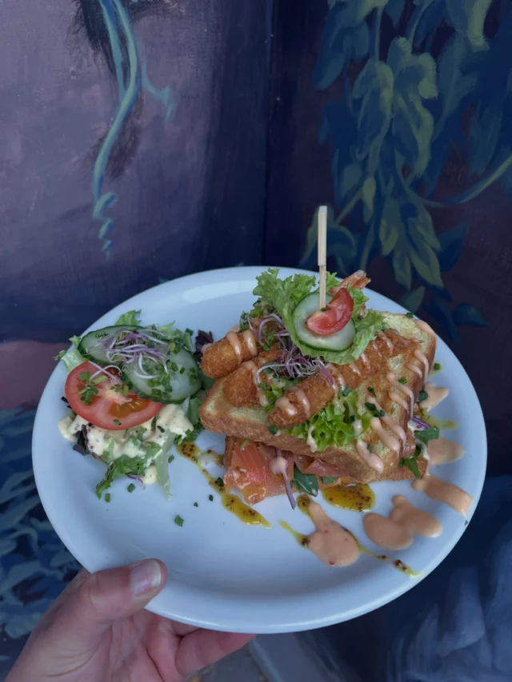
november en december
Brioche met gerookte zalm en krokante tempura garnalen.
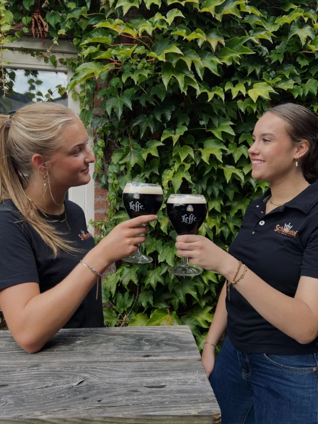
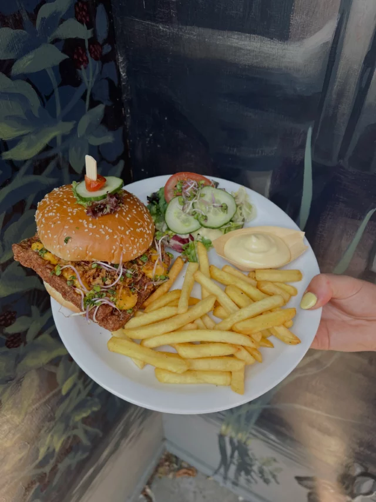
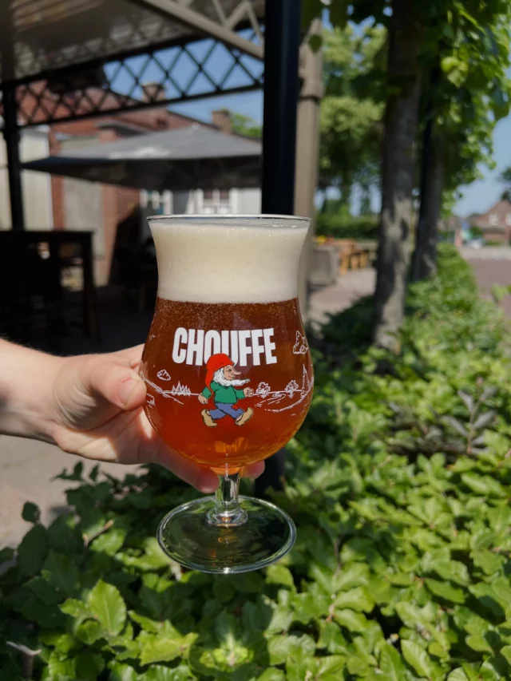
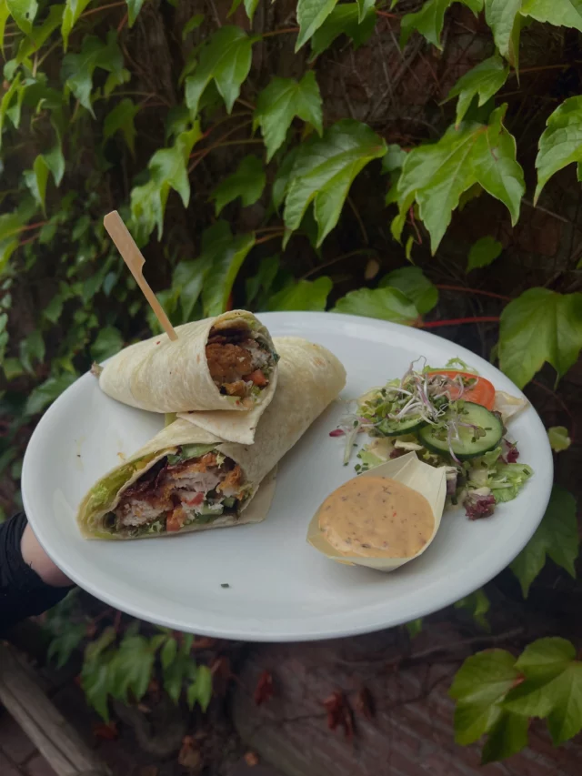
Café Schuttershof is niet alleen een eetcafé. Het pand bestaat uit zes afzonderlijke ruimtes voor bijna alle gelegenheden. We verzorgden er al ontelbare feesten, bruiloften, koffietafels, vergaderingen, cursussen en boerenovertrekken.
Een feest, bruiloft, koffietafel of andere gelegenheid met veel gasten? Daar is het Oude Parochiehuis erg geschikt voor. Welke dranken schenken we, en welke hapjes mogen we voorschotelen? Dat bespreken we samen.
Verschillende zalen, afhankelijk van het aantal personen. Met een groot tv-scherm of beamer en geluidsinstallatie. In de pauze serveren we graag een lunch of diner.
Voor deze gezellige trektocht stellen we onze grootste zaal, het Oude Parochiehuis, beschikbaar, tot 22:00. Voor de trek: onbeperkt broodjes kroket en frikandel.
€ 7,50 per persoon
Een feest op je eigen locatie? Wij zorgen voor eten, drinken en de complete inrichting. Neem voor alle mogelijkheden contact op met Gerrit van Gerven.
Tot ongeveer 1988 het parochiehuis van de naastgelegen kerk. In 2007 met hulp van 80 vrijwilligers verbouwd tot een prachtige zaal met de uitstraling van een bruin café. Voor bruiloften, feesten en partijen, maar ook vergaderingen, cursussen en bedrijfspresentaties.
Vernoemd naar de Flaes, het bekendste en grootste meer van het buitengebied van Esbeek. Een geheel besloten zaal, verwarmd door een houtkachel, aan onze sfeervolle binnenplaats.
Hier vind je het Andreas Schotel museum. Ook te gebruiken om met een klein gezelschap te borrelen of een hapje te eten.
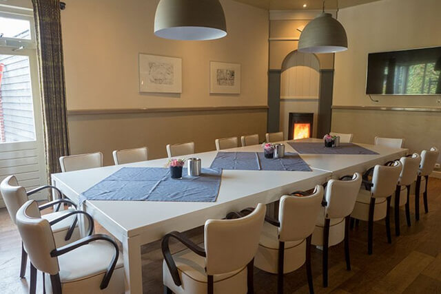
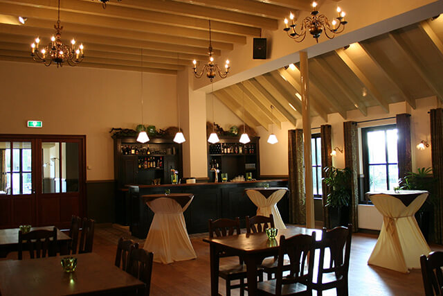
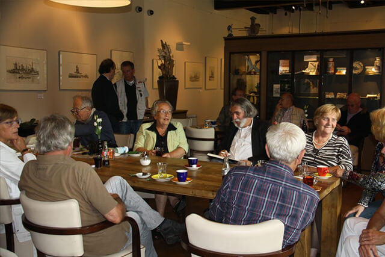
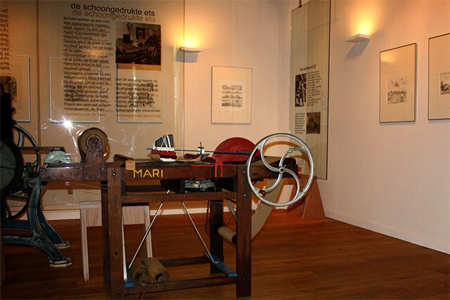
Andreas Schotel (Rotterdam, 1896 tot 1984) werkte vanaf zijn veertiende als patroontekenaar voor een tapijtfabriek en volgde in 1916 en 1917 de etsklas aan de kunstacademie. Hij legde zich vooral toe op de ets; zijn "schoon gedrukte ets" neemt in de etskunst een geheel eigen plaats in.
De mens aan het werk in de stad en in de Brabantse land- en bosbouw was zijn bron van inspiratie. Vanaf 1924 tot zijn dood bracht hij ieder jaar enkele maanden in Esbeek door, en hij wilde er ook begraven worden. Na zijn overlijden werd zijn oeuvre verzameld in Schuttershof; in mei 2009 opende het museum in de dorpshuiskamer.
Door de prachtige natuur van Esbeek loopt een kunst- en wandelroute met sculpturen en kunstwerken van verschillende kunstenaars. Een mooi begin of eind van je wandeling: koffie bij de open haard.
Meer weten over Andreas Schotel? Stichting Vrienden van Andreas Schotel: 06 23154233
Toen het laatste café van het dorp dreigde te verdwijnen, kochten de Esbekenaren het samen. Sindsdien is Schuttershof echt van het dorp.
Op 30 maart richt wagenmaker Doruske Smolders een café in zijn huiskamer in. In 1910 volgt een kruisboogbaan, in 1925 de schutterij.
Piet en Threes Smolders geven het café de naam Schuttershof. Onder hen groeit het uit tot een vaste waarde in Esbeek; in 1957 bouwt Piet er een feestzaal bij.
Coöperatie Esbeek, oftewel de Esbeekse bevolking, koopt het pand met certificaten en een lening van de Rabobank. Vrijwilligers verbouwen de feestzaal.
Precies honderd jaar na het eerste huiskamercafé opent op 15 mei de dorpshuiskamer, met het Andreas Schotel museum. Het project wint de eerste prijs in de Brabantse Dorpenderby.
Vanaf 1 juni beheert de Coöperatie het café zelf, met een beheercommissie. Jan Pulles is namens de Coöperatie het dagelijkse aanspreekpunt, samen met het vertrouwde team.
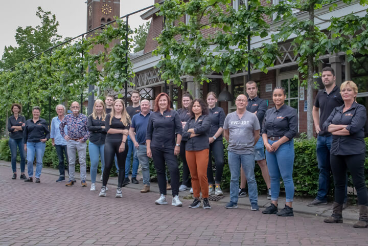
Bel even voor de actuele situatie of om te reserveren.
Volg het café op Instagram: @cafe.schuttershof